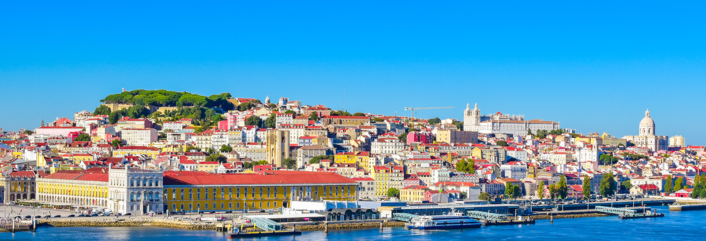

Localização
Lisboa, capital de Portugal, localiza-se na costa oeste, na foz do rio Tejo, na região central, próxima ao Oceano Atlântico, e encanta com sua história, colinas pitorescas, arquitetura deslumbrante, cultura rica, gastronomia única e vistas deslumbrantes do rio Tejo.